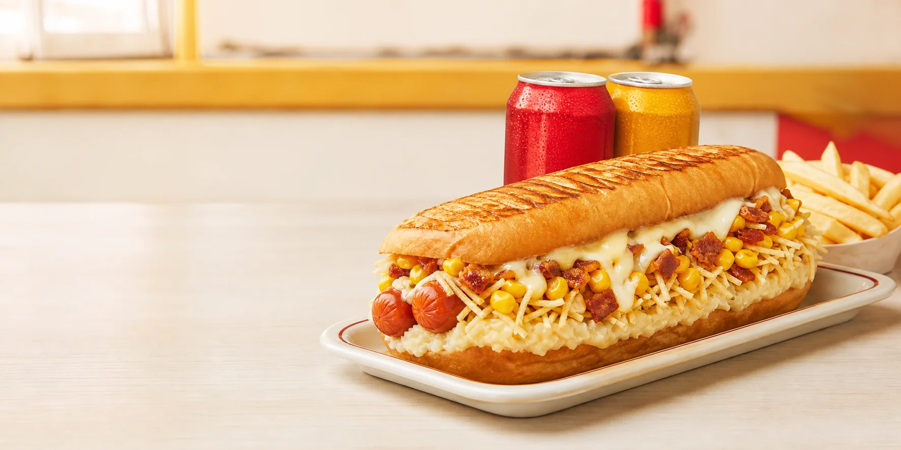

@dogdochef_prensado · agora
“O que faz o Dog do Chef
ser diferente?”
ser diferente?”
SABORQUE SURPREENDE!

GUAXUPÉ • MINAS GERAIS
TRADICIONAIS • PRENSADÕES • GRATINADOS • COMBOS
PROJETO DIGITAL • DOG DO CHEF
SITES QUE APRESENTAM SUA MARCA
E CONDUZEM O CLIENTE À AÇÃO.
MPO DESENVOLVIMENTO • EXPERIÊNCIAS DIGITAIS
Versão definitiva em 30 fps, com navegação contínua, banner e categorias em movimento e valorização da marca local. Sem pedidos ou pagamentos.